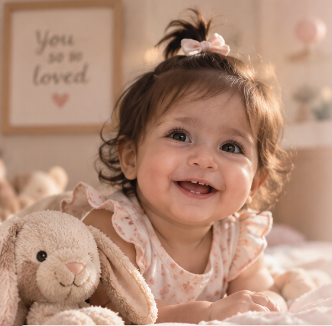

دختر قشنگم
یک سال از
زندگی تو
اینجا داستان یک سال اول زندگی توست
سرشار از عشق، خاطره و لحظههایی که
برای همیشه در قلب ما خواهند ماند.
❧نگاهی به مسیر یک سالگی تو❧
دوازده ماه پر از عشق، رشد، لبخند و خاطره ...

دختر قشنگم
اینجا داستان یک سال اول زندگی توست
سرشار از عشق، خاطره و لحظههایی که
برای همیشه در قلب ما خواهند ماند.
دوازده ماه پر از عشق، رشد، لبخند و خاطره ...